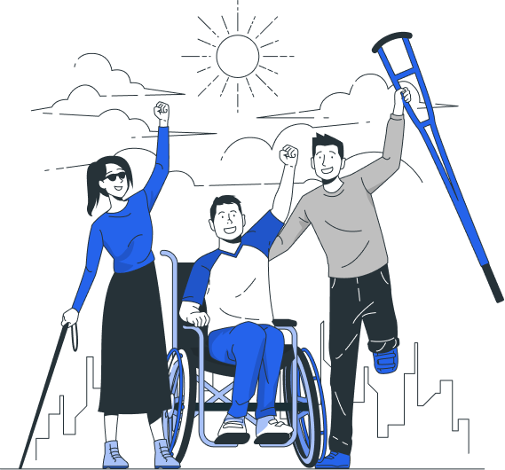

Infrastructure sans barrières
Le site Jungfrau-Aletsch, classé au patrimoine mondial de l’UNESCO, s’engage à rendre ses paysages et infrastructures accessibles aux personnes à mobilité réduite. Des aménagements spécifiques ont été mis en place afin de permettre à chacun de découvrir ce patrimoine naturel exceptionnel dans des conditions de confort et de sécurité, tout en respectant un environnement fragile.

Des dispositifs adaptés
Afin de faciliter l’accueil et les déplacements des visiteurs, plusieurs dispositifs d’accessibilité sont proposés sur le site et dans les infrastructures principales :
- Accès aménagés aux centres d’information et de visite
- Ascenseurs et rampes d’accès dans les bâtiments d’accueil
- Remontées mécaniques et transports adaptés sur certains sites
- Sentiers balisés et stabilisés sur des parcours sélectionnés
- Sanitaires adaptés dans les principaux lieux d’accueil
- Personnel formé pour accompagner et assister les visiteurs si nécessaire
World Nature Forum
Le centre de visite à Naters est 100% accessible : parking réservé, ascenseurs et toilettes adaptées (Eurokey).
Remontées Mécaniques
Accès facilité aux téléphériques et trains (Jungfraujoch, Bettmeralp). Personnel formé pour l'assistance.
Sentiers Adaptés
Sélection de sentiers sans obstacles : Promenade du Glacier, Sentier du Sommet et boucles panoramiques.
Informations Pratiques
Location de fauteuils tout-terrain ("JST Mountain Drive"). Chiens d'assistance bienvenus gratuitement.
Besoin d'aide ?
Notre équipe est à votre disposition pour planifier votre visite sur mesure.
Contacter l'équipe